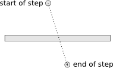
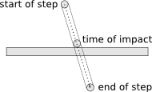

public class DynamicBody extends Body
The underlying physics engine works best with dynamic objects between 0.1 and 10 metres in size.
| Constructor and Description |
|---|
DynamicBody(World w)
Initialise a new dynamic Body with no shapes attached.
|
DynamicBody(World w,
Shape s)
Initialise a new dynamic Body with a single shape attached.
|
| Modifier and Type | Method and Description |
|---|---|
void |
applyForce(Vec2 force)
Apply a force to this body at its centre of mass.
|
void |
applyForce(Vec2 force,
Vec2 point)
Apply a force to this body at a specified position in the world.
|
void |
applyImpulse(Vec2 impulse)
Apply an impulse to this body at its centre of mass.
|
void |
applyImpulse(Vec2 impulse,
Vec2 point)
Apply an impulse to this body at a specified position in the world.
|
void |
applyTorque(float torque)
Apply a torque to this body, affecting its rotation about its centre of mass.
|
float |
getGravityScale()
Get the gravity scale for this body.
|
boolean |
isBullet()
Get the value of the bullet attribute on this body.
|
boolean |
isFixedRotation()
Is the orientation of this body fixed?
|
void |
setAngularVelocity(float angularVelocity)
Set this body's angular velocity.
|
void |
setBullet(boolean b)
Set the value of the bullet attribute on this body.
|
void |
setFixedRotation(boolean b)
Set the fixed rotation attribute for this body to true.
|
void |
setGravityScale(float g)
Set the gravity scale for this body.
|
void |
setLinearVelocity(Vec2 velocity)
Set this body's linear velocity.
|
addCollisionListener, contains, destroy, getAngle, getAngleDegrees, getAngularVelocity, getFillColor, getFixtureList, getImage, getLinearVelocity, getLineColor, getName, getPosition, getWorld, isAlwaysOutline, move, putOn, putOn, removeCollisionListener, setAlwaysOutline, setAngle, setAngleDegrees, setFillColor, setImage, setLineColor, setName, setPosition, toStringpublic DynamicBody(World w)
w - the world in which this body will existpublic void setLinearVelocity(Vec2 velocity)
velocity - the new velocitypublic void setAngularVelocity(float angularVelocity)
angularVelocity - the new angular velocity in radians pers secondpublic void applyImpulse(Vec2 impulse)
impulse - the impulse in Newton seconds (first component in x-direction, second component in y-direction)public void applyImpulse(Vec2 impulse, Vec2 point)
impulse - the impulse in Newton seconds (first component in x-direction, second component in y-direction)point - the point at which to apply the impulse (first component is x, second component is y)public void applyForce(Vec2 force)
force - the force in Newtons (first component in x-direction, second component in y-direction)public void applyForce(Vec2 force, Vec2 point)
force - the force in Newtons (first component in x-direction, second component in y-direction)point - the point at which to apply the force (first component is x, second component is y)public void applyTorque(float torque)
torque - the torque in Newton metrespublic void setBullet(boolean b)

This doesn't happen with collisions between dynamic and static bodies, because the engine uses continuous collision detection in that case: the dynamic body is swept from its old position to its new position, and if a collision occurs in the sweep the body is moved back to the time of impact.

Setting the bullet attribute to true turns on continuous collision detection between this body and other dynamic bodies, which is considerably more expensive. It is usually only necessary for small, fast-moving objects (like bullets).
b - the new value for the bullet attributepublic boolean isBullet()
public void setFixedRotation(boolean b)
b - the new fixed rotation attribute for this bodypublic boolean isFixedRotation()
public void setGravityScale(float g)
g - the new gravity scalepublic float getGravityScale()